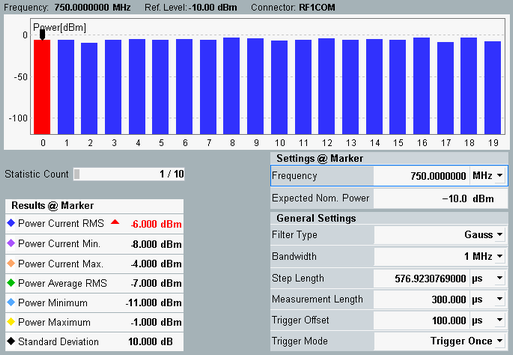
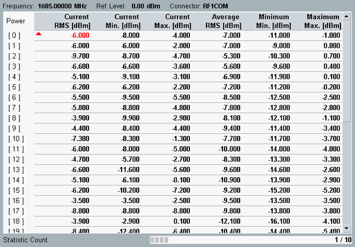
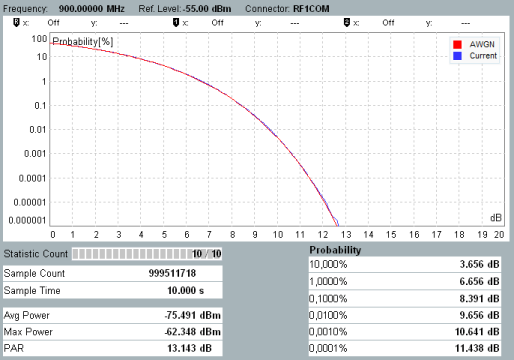
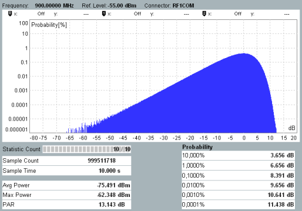

The "Power" tab shows the results in several alternative views. For a detailed description, see "Measurement Results".
An overview is given below.
For disabled list mode plus "Power" evaluation mode, only the summary statistics are displayed:

In list mode, basically the same results are returned, but separately for each step. The diagram view shows a bar graph for the measured power values and tables with the numerical results at a particular power step and the essential measurement settings.

The table view shows the bar graph results as a table with numeric values.

For disabled list mode plus "Statistic" evaluation mode, the diagram view shows the statistical distribution/density of the measured power samples (to be more precise: their deviation from the average power):

